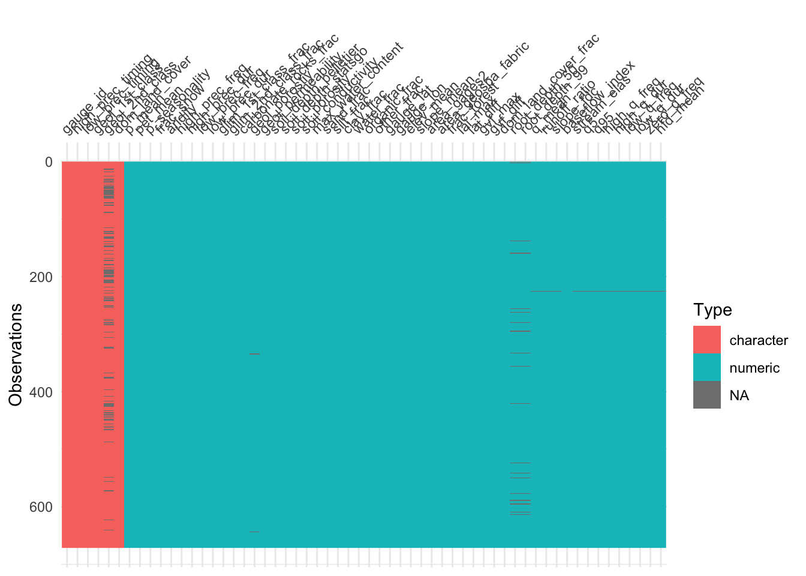

#Library loading
library(tidyverse)── Attaching core tidyverse packages ──────────────────────── tidyverse 2.0.0 ──
✔ dplyr 1.1.4 ✔ readr 2.1.5
✔ forcats 1.0.0 ✔ stringr 1.5.1
✔ ggplot2 3.5.1 ✔ tibble 3.2.1
✔ lubridate 1.9.3 ✔ tidyr 1.3.1
✔ purrr 1.0.4
── Conflicts ────────────────────────────────────────── tidyverse_conflicts() ──
✖ dplyr::filter() masks stats::filter()
✖ dplyr::lag() masks stats::lag()
ℹ Use the conflicted package (<http://conflicted.r-lib.org/>) to force all conflicts to become errorslibrary(tidymodels)── Attaching packages ────────────────────────────────────── tidymodels 1.3.0 ──
✔ broom 1.0.7 ✔ rsample 1.2.1
✔ dials 1.4.0 ✔ tune 1.3.0
✔ infer 1.0.7 ✔ workflows 1.2.0
✔ modeldata 1.4.0 ✔ workflowsets 1.1.0
✔ parsnip 1.3.1 ✔ yardstick 1.3.2
✔ recipes 1.2.0
── Conflicts ───────────────────────────────────────── tidymodels_conflicts() ──
✖ scales::discard() masks purrr::discard()
✖ dplyr::filter() masks stats::filter()
✖ recipes::fixed() masks stringr::fixed()
✖ dplyr::lag() masks stats::lag()
✖ yardstick::spec() masks readr::spec()
✖ recipes::step() masks stats::step()library(powerjoin)
library(glue)
library(vip)
Attaching package: 'vip'
The following object is masked from 'package:utils':
vilibrary(baguette)
#Data Ingest
root <- 'https://gdex.ucar.edu/dataset/camels/file'
download.file('https://gdex.ucar.edu/dataset/camels/file/camels_attributes_v2.0.pdf',
'data/camels_attributes_v2.0.pdf')
types <- c("clim", "geol", "soil", "topo", "vege", "hydro")
remote_files <- glue('{root}/camels_{types}.txt')
local_files <- glue('data/camels_{types}.txt')
walk2(remote_files, local_files, download.file, quiet = TRUE)
camels <- map(local_files, read_delim, show_col_types = FALSE)
camels <- power_full_join(camels ,by = 'gauge_id')
#Data Cleaning
visdat::vis_dat(camels)
skimr::skim(camels, geol_2nd_class)| Name | camels |
| Number of rows | 671 |
| Number of columns | 58 |
| _______________________ | |
| Column type frequency: | |
| character | 1 |
| ________________________ | |
| Group variables | None |
Variable type: character
| skim_variable | n_missing | complete_rate | min | max | empty | n_unique | whitespace |
|---|---|---|---|---|---|---|---|
| geol_2nd_class | 138 | 0.79 | 12 | 31 | 0 | 13 | 0 |
camels_clean <- drop_na(camels)